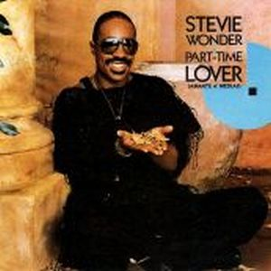
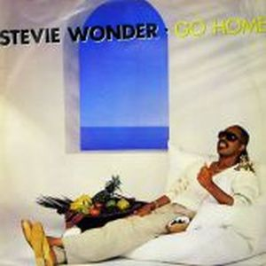
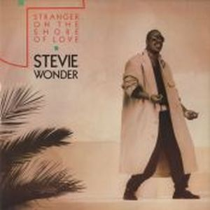
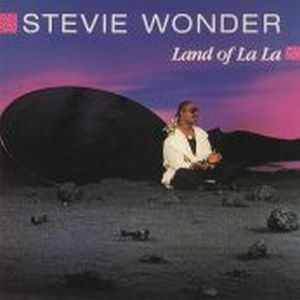

In Square Circle is a album sales in outstanding, with a first single called "Part time lover", a rhythmic and catchy song, very commercial with the collaboration at vocal background of Luther Vandross. Is the first song in history to get at the same time the number 1 four different Billboard charts; pop, r&b, dance, and adult contemporany, achieving also be nominated for Grammy awards.into a album with songs of high nivel as "Overjoyed", composed years ago by Stevie Wonder for The Secret Life of Plants but not publish, "Go
Home", or "I love too much".
Stevie Wonder was 5 years working this album for launch. But had time for collaborations
as "I Feel For You" by Chaka Khan, "There Must Be An Angel (Playing With My Heart)" by Eurythmics and support charities such as
"We Are the World" in the USA for
Africa, or "That's What Friends Are For" with Dionne Warwick, Elton John and Gladys Knight. One of the first songs that stood to benefit the cause AIDS, getting
a new Grammy.



